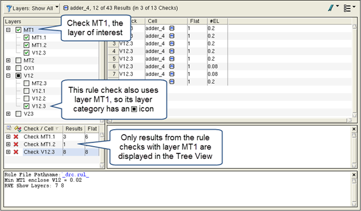

You can filter DRC results by user-defined categories. Filtering by categories makes it easier to select only the checks you are interested in debugging—only checks in the selected categories are displayed in the tree view of the Calibre RVE. A category is a grouping of rule checks and is defined in the Check Text Override (CTO) file.
Calibre Interactive nmDRC can automatically create a CTO file with the following category definitions:
Group — Rule checks are categorized by the Group statements in the rule file.
Layers — Rule checks are categorized by layer, where each layer category contains the rule checks that use that layer.
Recipe — Rule checks are categorized by check recipe, where each recipe category contains the rule checks in that recipe. See “Check Selection Recipe” in the Calibre Interactive User’s Manual for more information on check recipes.
You can also manually create a CTO file with user-defined categories.
The following video demonstrates the steps in the procedure.
A Check Text Override (CTO) file with category definitions. You can create the CTO file in two ways:
Create … |
Procedure |
|---|---|
Manually |
See “DRC RVE Check Text Override File (CTO File) Format” and “Example 4: Category Definition” in the same topic |
Automatically from the rule file. |
See “Creating a Check Text Override (CTO) File from the Rule File”. You can include categories when you create the CTO file from Calibre Interactive or from the Calibre RVE command line. |
The Tree View is filtered by the selections in the category tree, making it easier to find and focus on the results of interest. Use the Tree View and Result View to select, view, and highlight results as usual.
The Category Tree is only used for filtering—it is not used for selecting checks to highlight or selecting checks to display in the Result View.
The following steps demonstrate how to use the automatically generated Layers category to filter DRC results to only show results from checks that involve a specific layer (layer MT1 in the example). This example assumes you are set up to run with Calibre Interactive nmDRC.
Open Calibre Interactive nmDRC and load your runset.
On the Outputs pane, enable “Create CTO file.”
Enable “Generate CTO Categories from” and check the Layers checkbox. Check the Groups and Recipes checkboxes if desired.
Click Run DRC.
Open the results database in Calibre RVE if it does not open automatically.
Click the Filter button and check “Set Category” to display the category tree. (See Step 3 in the previous procedure)
If the header of the category tree is not “Layers,” click in the header and select Layers.
Check the category branch for the layer of interest (MT1 in this example).
You may see that other layers in the category tree now have a partial check indicator (). This means that at least one of the rule checks use the layer of interest.
The display should look similar to the following:
